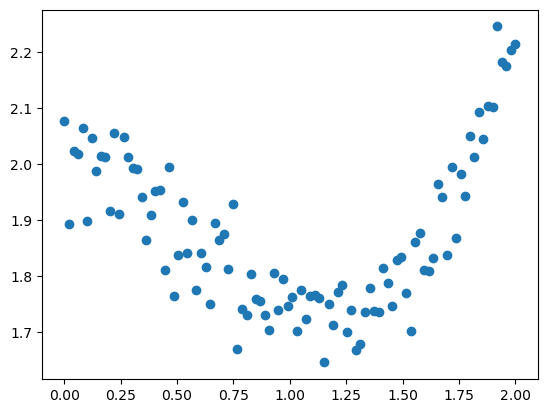
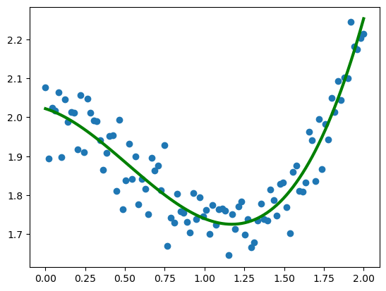
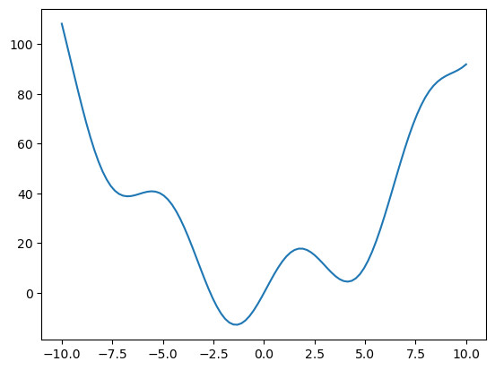
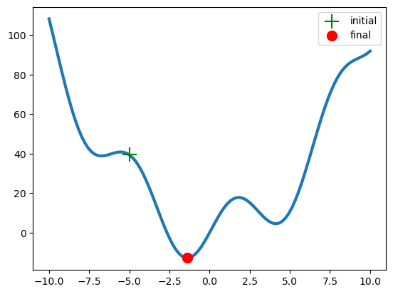
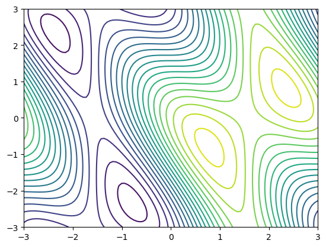
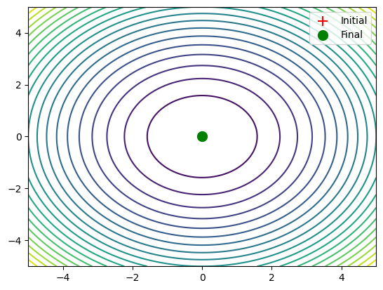

Scipy : Optimisation
On trouve beaucoup de fonctions dans le module optimize. Certaines permettent de faire des minimisations locales, ou globales, d'autres permette de développer des modeles statistiques avec la méthode des moindres carrés. On trouve également des fonctions pour faire de la programmation linéaire.
import numpy as np
import matplotlib.pyplot as plt
curve_fit
# Création d'un Dataset avec du bruit "normal"
x = np.linspace(0, 2, 100)
y = 1/3*x**3 - 3/5 * x**2 + 2 + np.random.randn(x.shape[0])/20
plt.scatter(x, y)

# Définition d'un modele statistique sensé "coller" au dataset ci-dessus
def f (x, a, b, c, d):
return a * x**3 + b * x**2 + c * x + d
from scipy import optimize
# curve_fit permet de trouver les parametres du modele f grace a la méthode des moindres carrés
params, param_cov = optimize.curve_fit(f, x, y)
# Visualisation des résultats.
plt.scatter(x, y)
plt.plot(x, f(x, params[0], params[1], params[2], params[3]), c='g', lw=3)

Minimisation 1D
la fonction optimize.minimize est utile pour trouver un minimum local dans une fonction a N dimensions
# Définition d'une fonction a 1 Dimension
def f (x):
return x**2 + 15*np.sin(x)
# Visualisation de la fonction
x = np.linspace(-10, 10, 100)
plt.plot(x, f(x))

# Définition d'un point x0 pour l'algorithme de minimisation
x0=-5
result = optimize.minimize(f, x0=x0).x # résultat de la minimisation
# Visualisation du résultat
plt.plot(x, f(x), lw=3, zorder=-1) # Courbe de la fonction
plt.scatter(x0, f(x0), s=200, marker='+', c='g', zorder=1, label='initial') # point initial
plt.scatter(result, f(result), s=100, c='r', zorder=1, label='final') # point final
plt.legend()
plt.show()

Minimisation 2D
# Définition d'une fonction 2D. X est un tableau numpy a 2-Dimension
def f (x):
return np.sin(x[0]) + np.cos(x[0]+x[1])*np.cos(x[0])
# Génération de la fonction sur un espace 2D.
x = np.linspace(-3, 3, 100)
y = np.linspace(-3, 3, 100)
x, y = np.meshgrid(x, y)
# Visualisation de la fonction
plt.contour(x, y, f(np.array([x, y])), 20)

# Exemple de fonction à minimiser (parabole en 2D)
def f(v):
x, y = v[0], v[1]
return x**2 + y**2
# Placement d'un point x0 initial aux coordonnées (0, 0)
x0 = np.array([0, 0]) # Tableau 1D
# Minimisation de la fonction
result = optimize.minimize(f, x0=x0).x
print('Le minimum est aux coordonnées', result)
# Création de la grille pour la visualisation
x = np.linspace(-5, 5, 100)
y = np.linspace(-5, 5, 100)
X, Y = np.meshgrid(x, y)
Z = f(np.array([X, Y]))
# Visualisation du résultat
plt.contour(X, Y, Z, 20, cmap='viridis') # Tracer les contours de la fonction
plt.scatter(x0[0], x0[1], marker='+', c='r', s=100, label='Initial') # Point initial
plt.scatter(result[0], result[1], c='g', s=100, label='Final') # Point final
plt.legend()
plt.show()
